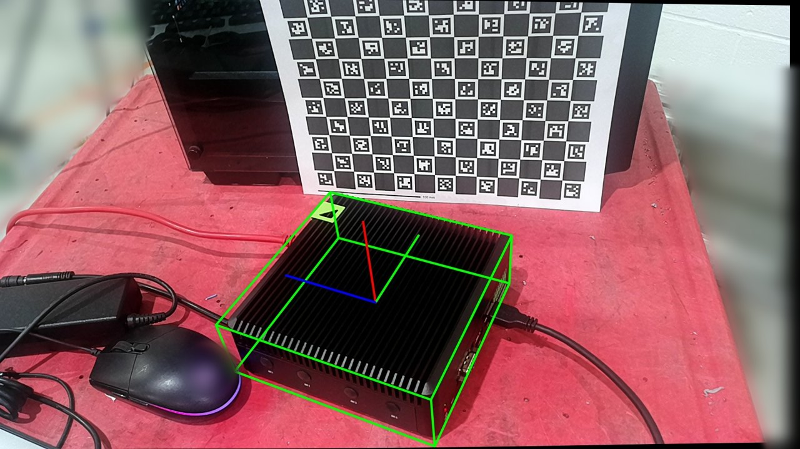
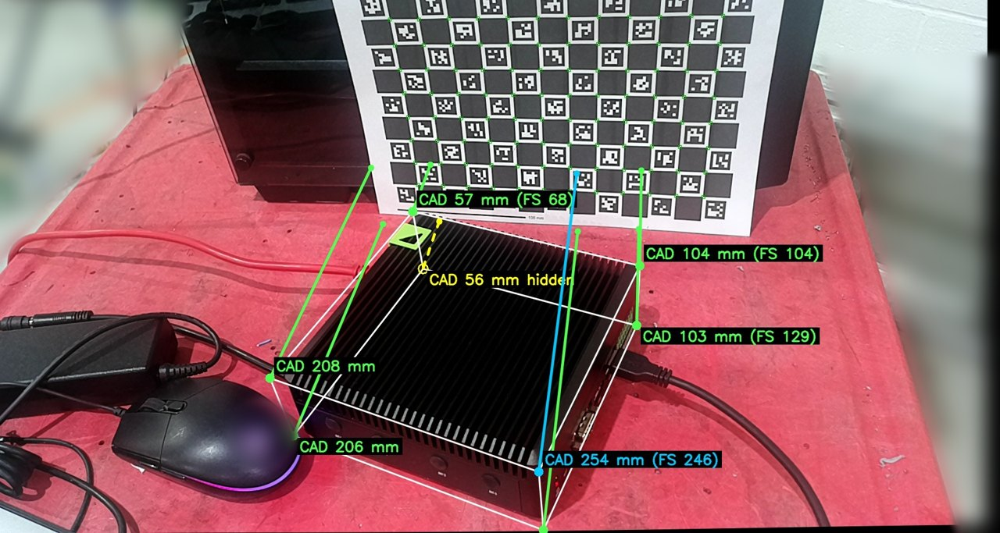
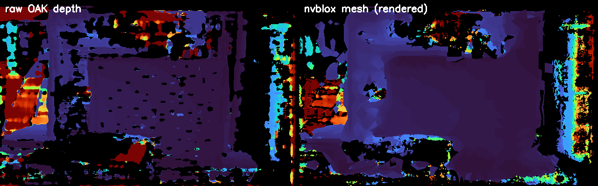
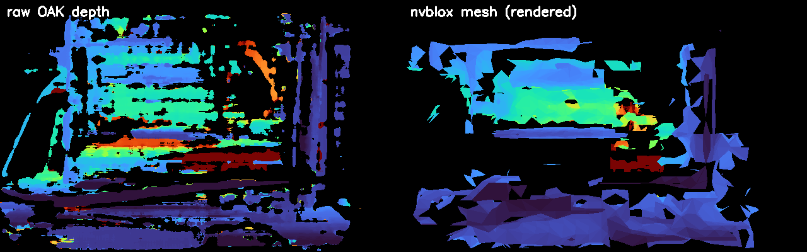
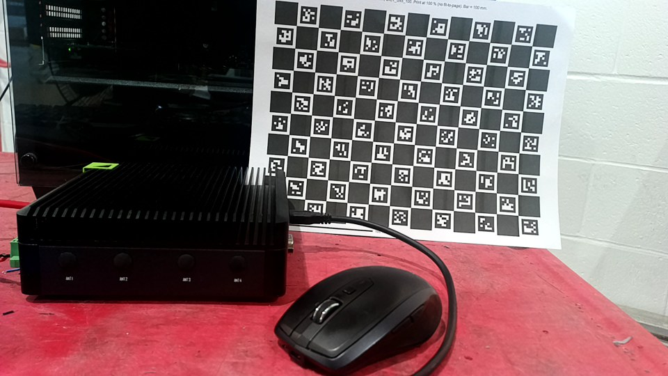
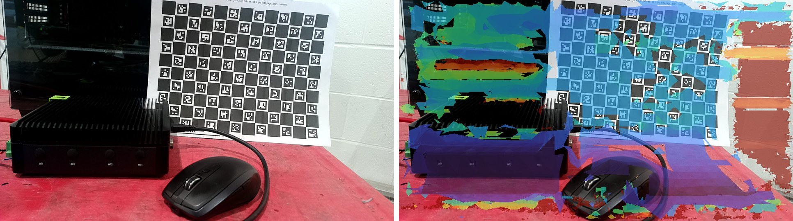
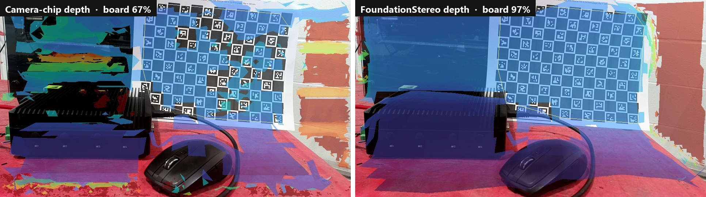
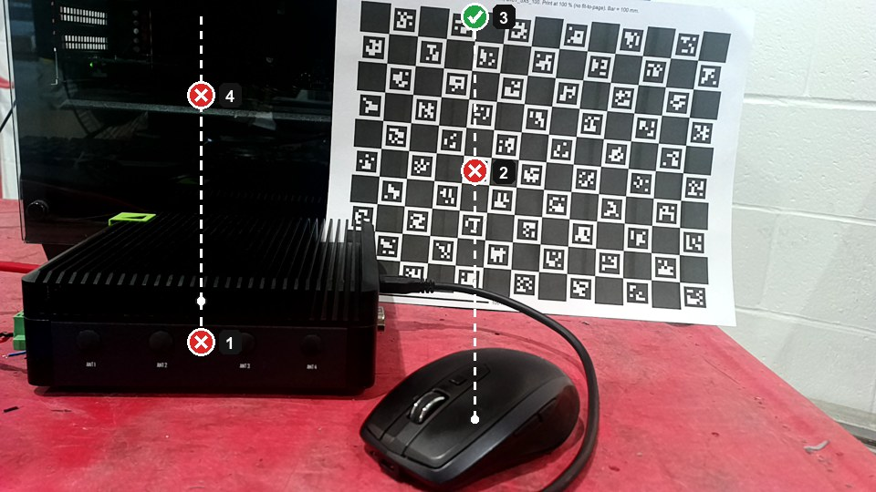
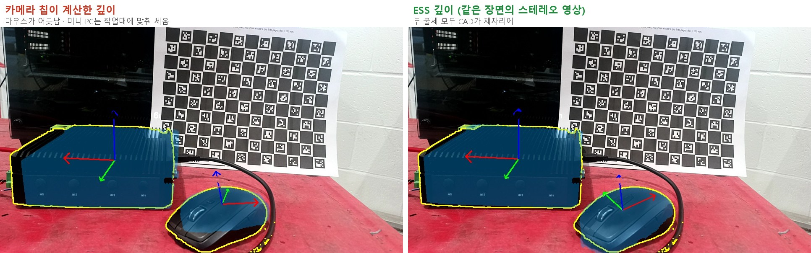

로봇의 뇌를 엣지에 올리기 — 모션편: 자세 다음은 움직임, 장애물 지도를 피해 가는 경로까지¶
현장 노트 · 모션편. 정정편부터 스캔편까지는 카메라 쪽 이야기였습니다. 글자로 지시하면 물체를 찾아 6-DoF 자세(위치와 방향)를 내놓는 데까지요. 그런데 자세는 숫자일 뿐이고, 로봇은 아직 한 발짝도 안 움직였습니다. 이번 글은 같은 엣지 컴퓨터에서 자세를 움직임으로 바꾸는 쪽을 시험한 기록입니다.
펜던트에서 ROS 2로 시리즈에서 개념은 다 다뤘습니다. 3부에서 MoveIt 2와 플래너를, 4부에서 GPU 플래너 cuMotion과 장애물 지도 nvblox를요. 이번에는 그걸 Orin NX 16GB 위에서 직접 실행해서 숫자로 확인했습니다. 중간에 하루는 장애물 지도가 틀렸다고 판단했다가, 다음 날 틀린 게 검사였다는 걸 알았어요. 그 과정도 그대로 싣습니다.
(앞 글들과 같은 Jetson Orin NX 16GB와 OAK-D 3D 카메라로 사무실 책상에서 한 일반적인 R&D 기록입니다. 실제 로봇은 움직이지 않았고, 실제 힘도 재지 않았습니다.)
30초 요약¶
- 자세와 CAD는 보이지 않는 쪽까지 안다. 카메라에서 가려진 미니 PC 모서리와 뒤쪽 보드 사이 거리를 CAD로 56 mm라고 계산했고, 자로 재니 55 mm였다.
- cuMotion은 엣지에서도 빠르다. UR10e 설정으로 계획 한 번에 중앙값 약 186 ms. 대신 처음 한 번은 GPU 준비에 16초가 걸리니, 첫 집기 때가 아니라 프로그램을 켤 때 미리 해 둔다.
- nvblox는 답을 아는 장면에서 정확했다. 계산으로 만든 깊이(0.6 m 상자, 1.0 m 벽)를 넣었더니 지도가 0.610 m, 1.000 m에 놓였다. 2 cm 칸 안이다.
- 라이브 카메라에서도 정확했다. 평평한 장면에서 지도와 실제 깊이의 차이가 중앙값 5 mm. 첫날엔 보드가 지도에서 사라진 줄 알았는데, 지도를 잘못 그려 비교한 검사 프로그램이 틀렸던 것이다.
- 지도를 켜면 cuMotion이 물체를 피한다. 녹화한 영상으로 만든 지도에서, 물체 속이나 너무 가까운 목표는 거부되고 빈 공간은 통과했다. 막힌 목표는
NO_IK_SOLUTION으로 돌아오니 헷갈리지 말 것. - 지도의 구멍은 깊이에서 온다. 카메라 칩 깊이로 만든 지도는 보드의 67%만 덮었다. 같은 bag의 좌우 영상으로 FoundationStereo나 ESS 깊이를 다시 계산해 넣으니 96~97%. 지도에 없는 곳은 플래너에게 빈 공간이다.
- 파운데이션 모델의 자세가 그대로 목표가 된다. 카메라 위치는 잰 값으로, 자세는 작업대에 세워 검사하고. 겹침 점수만 보면 뒤집힌 마우스를 놓친다. 자세가 거칠었던 건 깊이 탓이라, 같은 장면을 ESS 깊이로 다시 잡자 두 물체 모두 제자리에 맞았다.
- UR20용 cuMotion 설정은 직접 만들었다. 자동 구 맞추기가 실패해서, 구 71개로 팔을 감쌌다. 가상 하드웨어로 계획부터 실행까지 이어졌고, 실제 UR20은 다음 글 실물편에서.
- UR 드라이버는 로봇 없이 올릴 수 있다. 가상 하드웨어로 컨트롤러 13개(힘 모드 포함)가 모두 올라왔다. 단, 이 버전에서는 인자 이름이
use_fake_hardware다. - 힘 제어는 지금 스택에서는 UR 힘 모드. NVIDIA의 학습 기반 삽입 예제는 Isaac ROS 4.x 것이라, Orin에서 시도하려면 적어도 Isaac ROS 4.6과 JetPack 7.2로 올려야 한다.
자세 다음에 필요한 세 가지¶
물체의 자세를 알아도 로봇이 바로 집으러 갈 수는 없습니다. 세 가지가 더 있어야 해요.
- 경로 계획: 지금 팔 자세에서 물체 앞까지, 부딪히지 않는 길. 여기서는 cuMotion.
- 장애물 지도: 부딪히면 안 되는 것이 어디 있는지. CAD로 아는 것(작업대, 지그)은 플래너가 미리 아는 장애물 목록(플래닝 씬)에 넣고, 모르는 것(두고 간 공구 상자, 늘어진 케이블)은 카메라로 봐야 합니다. 여기서는 nvblox.
- 로봇 드라이버: 계산한 경로를 실제 로봇 컨트롤러에 넘기는 통로. 여기서는 Universal Robots(UR)의 ROS 2 드라이버.
결과부터 보면 이렇습니다. 경로 계획과 장애물 지도, 그리고 둘을 연결하는 것까지 동작했고, 드라이버는 가상으로만 확인했어요. 하나씩 보겠습니다.
자세가 먼저 알려 주는 것: 보이지 않는 모서리까지¶
움직임으로 넘어가기 전에, 자세 하나가 무엇을 알려 주는지부터 보겠습니다. 미니 PC를 ChArUco 보드 앞에 두고 FoundationStereo 깊이로 FoundationPose 자세를 잡은 뒤, 제조사 CAD를 그 자세에 놓고 모서리마다 보드 평면까지 거리를 계산했어요.

초록 상자가 이 자세에 놓인 CAD의 외곽, 세 선이 물체의 좌표축입니다. 상자가 미니 PC의 모서리에 그대로 붙어 있어요.

CAD는 CAD로 계산한 거리, 괄호 안 FS는 같은 지점을 FoundationStereo 깊이로 잰 거리입니다. 노란 점선은 카메라에서 보이지 않는 모서리예요.
보드에 가장 가까운 모서리는 카메라에서 가려진 뒤쪽 모서리였습니다. CAD로 계산하니 56 mm, 자로 재니 55 mm로 1.1 mm 차이였어요. 깊이 영상만으로는 이 모서리를 알 수 없습니다. 깊이는 카메라에 보이는 면까지만 재니까요. FoundationStereo가 잰 보이는 면은 보드에서 67~251 mm였고, 카메라 칩이 직접 계산한 깊이는 미니 PC 윗면의 방열 핀에서 대부분 비었습니다.
자세와 CAD가 있으면 물체의 보이지 않는 쪽까지 어디 있는지 알 수 있고, 그만큼 충돌 여유를 정확하게 잡을 수 있습니다. 반대로 처음 보는 물체나 작업대 위 잡동사니처럼 CAD가 없는 것은 깊이로 만든 장애물 지도가 맡아야 해요. 이 글의 나머지가 그 지도와 경로 계획 이야기입니다. (한 장면, 한 위치에서 잰 결과입니다.)
cuMotion, 준비는 한 번 길고 계획은 짧다¶
cuMotion은 NVIDIA의 GPU 경로 계획 라이브러리 cuRobo를 MoveIt 2에 끼워 쓰는 플러그인입니다. 이번에는 cuRobo에 들어 있는 UR10e 설정 파일로 시험했어요. 시작 자세를 바꿔 가며 다섯 번 계획했습니다.
| 항목 | 결과 |
|---|---|
| 처음 한 번 GPU 준비 | 16.4초 |
| 계획 한 번 | 중앙값 약 186 ms (61~190 ms) |
| 성공 | 다섯 번 중 네 번 |
| GPU 메모리 | 최대 +0.2 GB |
실패한 한 번은 일부러 크게 어긋나게 준 시작 자세였습니다. 계획이 실패하면 cuMotion은 "길을 못 찾았다"고 답하고 팔은 움직이지 않아요. 이상한 경로를 내놓는 게 아니라 멈추는 쪽이라 다행입니다. 프로그램은 이 답을 받아 다른 대기 자세에서 다시 시도하거나 사람을 부르게 만들면 됩니다.
여기서 실무에 바로 쓸 건 16초입니다. cuRobo는 처음 계획할 때 GPU 쪽 계산을 준비하느라 오래 걸리고, 그다음부터 빨라집니다. 그러니 첫 부품이 들어왔을 때 처음 계획하면 첫 사이클만 16초가 더 걸려요. 프로그램을 켤 때 아무 계획이나 한 번 미리 실행해 두면 됩니다.
현장 노트 2부에서 7축 팔(데모용 Franka 설정)로 잰 210 ms와 나란히 놓고 "빨라졌다"고 하지는 않겠습니다. 팔도 장면도 다르거든요. 둘 다 같은 엣지 컴퓨터에서 0.2초 안팎이라는 것까지가 말할 수 있는 범위입니다. 다른 UR 모델을 쓴다면 그 모델용 cuMotion 설정 파일(관절 한계, 그리고 팔을 감싸 충돌을 검사하는 구(球)들의 배치)을 따로 만들어야 합니다. UR의 MoveIt 설정에는 여러 모델이 들어 있지만, cuMotion 설정은 별개예요(UR20용을 만든 과정은 아래에).
플래너를 고르는 기준은 3부에서 다뤘으니 짧게만 정리하면 이렇습니다.
| 플래너 | 하는 일 | 쓸 곳 |
|---|---|---|
| OMPL (RRT 계열) | 무작위로 나무를 뻗어 길을 찾는다. 어디든 찾지만 매번 다르고 구불구불할 수 있다 | 셋업, 넓은 공간 우회 |
| cuMotion | GPU로 후보 경로 여럿을 동시에 다듬는다. 매끄럽고 짧다 | 장애물이 많은 장면의 이동 |
| Pilz | 정해진 모양(관절 이동, 직선, 원호)을 그대로 | 부품 앞 마지막 몇 cm |
흔한 조합은 이동은 cuMotion이나 OMPL로, 마지막 접근은 Pilz 직선으로입니다. 이번에 설치된 Isaac ROS 3.2 환경에는 OMPL, Pilz, CHOMP, cuMotion 플러그인이 모두 들어 있었어요.
장애물 지도는 답을 아는 장면부터¶
nvblox는 깊이 영상을 받아 공간을 작은 정육면체(복셀)로 나누고, 칸마다 "가장 가까운 표면까지 거리"를 적은 지도를 만듭니다(4부의 'cuMotion은 무엇을 피하나'). 카메라를 바로 연결하고 싶었지만, 먼저 답을 아는 장면으로 시험했습니다. 라이브에서 지도가 이상하게 나오면 카메라 탓인지 설정 탓인지 구분할 수 없기 때문이에요.
그래서 깊이 영상을 계산으로 만들었습니다. 카메라 앞 0.6 m에 상자, 1.0 m에 벽. 그걸 nvblox에 넣고, 나온 지도에서 두 면이 어디 놓였는지 쟀습니다.
| 항목 | 결과 |
|---|---|
| 상자 면 (정답 0.6 m) | 0.610 m |
| 벽 (정답 1.0 m) | 1.000 m |
| 지도 칸 크기 | 2 cm |
| 깊이 한 장을 지도에 더하는 시간 | 약 0.6 ms |
| 지도 출력 | 약 11 Hz |
| 메모리 | +0.4 GB |
두 면 모두 한 칸(2 cm) 안에 들어왔으니 통과입니다. 이걸로 nvblox 설정, 좌표 변환(로봇 기준 좌표계 base_link), 토픽 연결이 맞다는 건 확인됐어요. 남은 변수는 카메라뿐입니다.
라이브 카메라: 지도가 틀린 줄 알았다¶
이제 진짜 카메라입니다. OAK-D의 스테레오 깊이를 ROS 2 토픽으로 내보내고, nvblox가 그걸 받아 지도를 만들게 했습니다. 카메라 앞 0.39 m에 체커보드를 세웠어요.
속도는 처음부터 충분했습니다. 카메라는 초당 13.5장을 보냈고, 깊이 한 장을 지도에 더하는 데 4~7 ms, 메모리는 0.3~0.5 GB 늘었어요.
지도가 맞는지는 이렇게 확인했습니다. 지도를 카메라 시점으로 다시 그려서, 같은 픽셀에서 카메라가 잰 깊이와 비교하는 거예요. 첫날 결과는 나빴습니다. 3 cm 안으로 맞는 점이 14%뿐이었고, 바로 앞 보드가 지도에서 거의 사라진 것처럼 보였어요. 먼 곳을 잘못 잰 깊이가 보드를 지웠다는 그럴듯한 설명까지 세웠습니다.
다음 날 다시 보니, 틀린 건 지도가 아니라 검사였습니다.
nvblox가 내놓는 지도는 CAD 모델처럼 작은 삼각형 면을 이어 붙인 메시입니다. 그런데 검사 프로그램은 이 삼각형의 꼭짓점만 화면에 한 픽셀씩 찍고, 꼭짓점 사이의 면은 그리지 않았어요. 0.4 m 거리에서 2 cm 칸 하나는 화면에서 약 400 픽셀(20×20)을 차지하니, 가까운 보드는 대부분 아무것도 그려지지 않은 빈 픽셀로 남았습니다. 그 빈 픽셀에는 보드 뒤쪽의 먼 꼭짓점이 대신 찍혀서 "안 맞는다"고 판정됐고요. 삼각형 면까지 그대로 그려서 비교하자 결과가 완전히 달라졌습니다. 없는 걸 지어서 채운 게 아니라, nvblox가 원래 만든 면을 빠뜨리지 않고 그린 겁니다.

왼쪽이 카메라가 잰 깊이, 오른쪽이 nvblox 지도의 삼각형 면을 같은 시점에서 그대로 다시 그린 것입니다(색은 거리, 검은 곳은 값 없음). 그림 안 글자는 원본 그대로 영어입니다.
| 장면 | 가까운 픽셀의 오차 (중앙값) | 3 cm 안 | 지도가 덮은 비율 |
|---|---|---|---|
| 평평한 체커보드, 어두운 사무실 | 5 mm | 81% | 95% |
| 유리 옆판 PC 케이스, 조명 켬 | 19 mm | 63% | 95% |
| 같은 장면, 깊이를 1.5 m에서 자름 | 15 mm | 70% | 56% |
평평한 장면에서 중앙값 5 mm면 지도 칸(2 cm)보다 훨씬 작습니다. 어두운 조명도 문제가 아니었어요. 유리처럼 반사하는 면이 있으면 스테레오 깊이 자체가 흔들려서 19 mm로 커지지만, 그래도 칸 하나 정도입니다.

깊이를 1.5 m에서 잘라 넣으면 먼 곳의 잡음이 빠져서 오차가 조금 줄지만(19 → 15 mm), 지도가 덮는 범위가 95%에서 56%로 줄어듭니다. 작업 영역만 보면 되는 셀이라면 쓸 만하고, 아니라면 굳이 자를 필요는 없어요.
여기서 기억할 건 숫자보다 순서입니다. 첫날의 14%만 믿었다면 nvblox 설정을 이리저리 바꾸며 시간을 썼을 겁니다. 답을 아는 장면에서 이미 통과했기 때문에 도구보다 검사를 먼저 의심할 수 있었어요. 도구를 의심하기 전에 측정부터 확인하세요. 그리고 4부에서 말한 대로 nvblox는 사람을 지키는 장치가 아닙니다. 사람 안전은 로봇 컨트롤러의 안전 기능과 안전 센서가 맡습니다.
연결하면서 걸린 것들
- nvblox는 `base_link` 좌표 변환(TF)이 없으면 지도를 안 만듭니다. 깊이 토픽(`/camera_0/depth/image`)과 렌즈 정보 토픽(`/camera_0/depth/camera_info`)도 이 이름 그대로 있어야 했어요. - 카메라 프로그램(DepthAI)과 nvblox가 서로 다른 Docker 컨테이너에 있어서, 두 컨테이너를 같은 `ROS_DOMAIN_ID`로 맞춰 토픽이 보이게 했습니다. - USB 카메라는 한 프로그램만 잡을 수 있습니다. 자세 추정 데모가 카메라를 잡고 있으면 먼저 꺼야 해요.한 번 녹화해 두면 카메라 없이 다시 본다¶
시험할 때마다 카메라를 켜고 물건을 다시 놓으면, 결과가 바뀌어도 장면 탓인지 설정 탓인지 알 수 없습니다. 그래서 카메라 영상을 ROS bag(토픽을 그대로 녹화한 파일)으로 남겼어요. 미니 PC와 무선 마우스를 체커보드 앞에 두고, 마우스를 손으로 움직이며 44초를 녹화했습니다. 컬러, 컬러에 맞춘 깊이, 좌우 영상, 렌즈 정보, 좌표 변환이 모두 시각이 맞춰져 들어갔어요(1.3 GB, 스트림마다 434장).

bag에 녹화된 컬러 영상 한 장입니다. 왼쪽 뒤는 유리 옆판 PC 케이스예요.
녹화하면서 두 가지를 챙겼습니다.
- 컬러 카메라의 초점을 공장 보정 위치에 고정했습니다. 스캔편에서 이 카메라의 공장 렌즈 값은 한 초점 위치에서만 맞는다는 걸 쟀었죠. 녹화 내내 그 위치에 고정해 두면 나중에 이 bag으로 무엇을 계산하든 렌즈 값이 맞습니다.
- ROS 2 Python에서 영상 메시지를 만드는 방식 하나가 10배 속도 차이를 냈습니다. 처음에는 초당 2.2장밖에 안 나왔는데, 카메라는 초당 10.4세트를 보내고 있었고 Python 처리도 2.6 ms면 끝났어요. 원인은
Image.data에 바이트 문자열을 그대로 넣는 부분이었습니다.array("B")로 채워 넣자 초당 10장이 모두 나왔어요.
이 bag을 nvblox에 다시 재생하니 카메라 없이도 깊이 425장이 모두 지도에 들어갔습니다(한 장에 약 1.8 ms). 만들어진 지도를 같은 컬러 영상 위에 겹쳐 보면 이렇습니다.

오른쪽에서 파란색일수록 가깝고 빨간색일수록 멉니다. 지도가 놓인 곳은 제자리에 맞게 놓였지만, 빈 곳도 많습니다. 보드는 왼쪽 아래와 군데군데 흰 칸이 그대로 드러나 있고, 미니 PC 윗면 방열 핀 위는 검은 띠로 비어 있어요. 왼쪽 유리 케이스와 오른쪽 벽 가장자리는 깊이가 흔들려 지도도 얼룩덜룩합니다.
이 지도는 카메라 칩이 직접 계산한 스테레오 깊이로 만들었습니다. 그 깊이가 구멍의 원인인지 확인하려고, 같은 bag에 함께 녹화해 둔 좌우 영상으로 깊이를 다시 계산해 봤어요. 카메라를 다시 켤 필요는 없었습니다. bag 전체에서 고른 20장에 대해 FoundationStereo와 ESS로 깊이를 구해 컬러 시점으로 옮기고, 같은 nvblox 설정(2 cm 칸)으로 지도를 하나씩 만든 뒤 같은 컬러 영상 위에 겹쳤습니다.

흰 테두리가 보드(ArUco 마커로 찾은 영역)이고, 그림 안 글자는 원본 그대로 영어입니다. 오른쪽은 보드, 미니 PC의 방열 핀 위, 마우스까지 빈틈없이 덮습니다. 대신 왼쪽 유리 케이스는 현장 노트 2부에서 본 것처럼 평평한 판 하나로 지도에 들어갑니다.
| 깊이 | 깊이가 있는 픽셀 (보드 / 전체) | 지도가 덮은 보드 | 한 장 계산 시간 |
|---|---|---|---|
| 카메라 칩 (블록 매칭) | 84% / 73% | 67% | 카메라 안에서 |
| FoundationStereo | 100% / 96% | 97% | 약 2.2초 |
| ESS | 100% / 95% | 96% | 약 0.13초 |
구멍의 원인은 깊이였습니다. 지도와 깊이가 함께 계산되는 픽셀에서 FoundationStereo와 ESS 깊이는 카메라 칩 깊이와 중앙값 차이가 1 mm 안이었으니, 지도가 통째로 엉뚱한 자리에 생긴 게 아니라 빈칸이 달랐던 거예요. 이게 왜 중요하냐면, 지도에 없는 자리는 플래너에게 장애물이 아니기 때문입니다. nvblox는 기본 설정에서 못 본 곳을 빈 공간으로 다룹니다(4부의 '조심할 네 가지'). 그러니 실제로 쓸 때는 카메라 칩 깊이 대신 학습형 스테레오 깊이를 지도에 넣는 게 낫고, 속도가 필요하면 ESS로 충분했습니다(ESS는 상업용으로 쓸 수 있는 NGC 모델, 튜닝편). 남는 빈칸은 못 본 곳을 막힌 곳으로 두는 설정으로 처리합니다. (bag 한 개, 고정 카메라에서 잰 결과입니다.)
이제 같은 장면으로 설정만 바꿔 가며 비교할 수 있어요.
지도를 경로 계획에 연결하기¶
지도가 맞는다는 걸 확인했으니, 이제 cuMotion이 그 지도를 장애물로 읽게 할 차례입니다. 녹화한 bag의 깊이로 로봇 기준 좌표계의 nvblox 지도를 만들었습니다. 카메라는 UR10e 받침대 옆 한 위치에 있다고 가정해 좌표를 맞췄어요(잰 값이 아닙니다). 그다음 툴을 아래로 향한 목표 자세 몇 개를 보내 봤어요. 지도를 끈 경우와 켠 경우를 나란히 놓으면 이렇습니다.
같은 목표를 녹화한 사진 위에 찍어 보면 어디를 겨눴는지 보입니다.

번호는 위 그림의 줄 순서와 같습니다. 1 미니 PC 안쪽, 2 마우스 위 12 cm, 3 마우스 위 20 cm, 4 미니 PC 위 15 cm(25 cm는 화면 위로 벗어남). 빈 공간 목표(5)도 화면 밖입니다. 흰 점이 물체 표면, 점선이 그 위로 올린 높이예요. 초록은 계획이 나온 목표, 빨강은 거부된 목표입니다. 이 시험의 카메라 설치 위치와 각도는 잰 값이 아니라 가정값(수평)이라, 여기서 '위'는 실제 수직과 조금 다릅니다. 나중에 작업대 평면으로 재 보니 카메라는 약 16° 아래를 보고 있었어요.
지도를 끄면 미니 PC 속에 놓은 목표까지 계획이 나옵니다. cuMotion은 모르는 물체를 피할 수 없으니까요. 지도를 켜면 물체 속 목표는 거부되고, 빈 공간 목표는 그대로 통과합니다. 마우스 위 12 cm가 막힌 건 툴 끝이 아니라 손목이 표면에 너무 가까워져서였어요(8.9 cm). 미니 PC 위 목표가 막힌 건 바로 뒤에 있던 유리 PC 케이스(1.7~4.7 cm) 때문이었고요. 계획 한 번에 0.3~0.9초, 그중 지도를 가져오는 데 약 50 ms가 들었습니다.
하나 헷갈리는 점이 있습니다. 장애물 때문에 막힌 목표를 cuMotion은 NO_IK_SOLUTION(역기구학 해 없음)으로 돌려줘요. 이 이름만 보면 팔이 닿지 않는 자리라고 생각하기 쉬운데, 실제로는 충돌 때문일 수 있습니다. 같은 목표를 지도 없이 다시 계획해 보면 어느 쪽인지 바로 알 수 있습니다.
자세를 목표로 바꾸기¶
지금까지 목표는 손으로 찍었습니다. 이번에는 파운데이션 모델이 잡은 물체 자세에서 목표를 만들었어요. 녹화한 bag의 한 장면에서 Grounding DINO → SAM2 → FoundationPose로 미니 PC와 마우스의 자세를 잡고, 물체마다 윗면 20 cm 위에서 툴이 아래를 보는 '집기 전 자세'를 목표로 삼았습니다.

같은 bag의 같은 장면입니다. 파란색이 각 자세에 놓은 CAD, 노란 선이 SAM2 마스크, 세 화살표가 물체의 좌표축이에요. 왼쪽(카메라 칩 깊이)은 마우스가 위·오른쪽으로 어긋나 겹침 비율(IoU) 0.66, 깊이 차이 11 mm라 '확신 낮음'으로 표시했고, 미니 PC도 작업대에 맞춰 세워야 했습니다(0.88, 6 mm). 오른쪽(ESS 깊이)은 미니 PC 0.92·6 mm, 마우스 0.87·4 mm로 두 물체 모두 CAD가 제자리에 앉았어요.
처음에는 지도와 같은 깊이를 쓰려고 카메라 칩이 직접 계산한 깊이로 자세를 잡았습니다. 그런데 이 깊이는 미니 PC의 방열 핀 윗면에서 거의 비고, 검고 반짝이는 마우스에서는 60%만 값이 있었어요. 그래서 같은 bag에 함께 녹화해 둔 좌우 영상으로 FoundationStereo와 ESS 깊이를 다시 계산하고, 자세를 잡는 코드는 그대로 둔 채 깊이만 바꿨습니다. 좌우 영상으로 만든 깊이는 왼쪽 카메라 시점이라, 카메라의 공장 보정값으로 컬러 영상 시점에 옮겨 맞췄어요.
결과는 그림 오른쪽과 같습니다. FoundationStereo 깊이도 거의 같아서(미니 PC 0.92, 마우스 0.84), 두 깊이로 잡은 미니 PC 자세는 1.2°, 2.9 mm만 달랐어요. 자세가 어긋났던 건 FoundationPose 탓이 아니라 깊이 탓이었던 거죠. 이 장면에서 깊이 계산에 ESS는 0.05초, FoundationStereo는 2초가 걸려서, 목표를 만들 때는 ESS를 쓰기로 했습니다.
여기서 세 가지를 배웠어요.
- 카메라 설치 위치는 가정하지 말고 잽니다. 앞 절의 시험은 카메라가 수평이라고 가정했어요. 깊이에서 작업대 평면을 찾아 재 보니, 카메라는 작업대 위 16.9 cm에서 16° 아래를 보고 있었습니다. 이 절부터는 잰 값으로 계획했어요.
- 겹침 점수만으로는 뒤집힌 자세를 못 잡습니다. 카메라 칩 깊이로 잡았을 때 마우스 자세가 처음에는 위아래가 뒤집혀 나왔어요. 스캔편에서 만든 마우스 메시는 바닥이 평평해서, 뒤집어도 윤곽이 거의 같습니다. 그래서 겹침 점수(0.72)는 괜찮아 보였는데, 깊이와 비교하니 18~28 mm나 어긋났어요. 작업대 위에 놓일 수 있는 자세만 후보로 두고 다시 고르자 제대로 섰습니다. 미니 PC도 윗면 방열 핀에서 깊이가 거의 안 잡혀 13~16° 기울어져 나왔는데, 작업대에 맞춰 세우자 바로잡혔어요.
- 좋은 자세는 손대지 않습니다. 칩 깊이 때문에 넣은 '작업대에 세우고 방향을 다시 고르는' 단계가, 깊이가 좋아지자 오히려 맞는 자세를 다른 방향으로 바꿔 버렸어요. 그래서 FoundationPose가 낸 자세가 이미 똑바로 서 있으면, 다른 후보가 깊이에 2 mm 이상 더 잘 맞을 때만 바꾸게 했습니다.
카메라 칩 깊이로 만든 목표들을 앞 절과 같은 방식으로 cuMotion에 보냈습니다. 지도를 켜면 두 물체의 집기 전 자세는 계획이 나오고(0.8초 남짓), 일부러 물체 속 2 cm에 둔 목표는 거부되고, 빈 공간은 통과했어요. 지도를 끄면 전부 계획이 나왔으니, 거부는 지도 덕분입니다.
UR 드라이버를 로봇 없이 올리기¶
로봇이 없어도 드라이버까지는 확인할 수 있습니다. UR ROS 2 드라이버(이번 환경은 2.9.0, ROS 2 Humble)에는 ros2_control의 가상 하드웨어가 있습니다. 실제 로봇 대신, 받은 명령을 그대로 따라 한 척만 하는 장치예요. 컨트롤러가 뜨는지, 명령이 오가는지 보기에는 이걸로 충분합니다.
컨트롤러는 13개가 모두 올라왔습니다. 관절 궤적 컨트롤러는 물론이고 힘 모드, 프리드라이브(손으로 끌어 옮기기), 공구 접촉 감지 컨트롤러까지요.
하나 걸린 게 있습니다. 최신 문서는 가상 하드웨어 인자를 use_mock_hardware:=true로 안내하는데, Humble용 2.9.0은 이 이름을 모릅니다. use_fake_hardware:=true라고 써야 해요. 모르는 인자는 오류 없이 무시되고 드라이버는 실제 로봇용 설정으로 뜹니다. 가상 하드웨어로 띄웠다고 생각했는데 로봇 연결 오류가 난다면 이것부터 보세요. ROS 2 Jazzy용 드라이버부터는 use_mock_hardware입니다.
가상 하드웨어는 연결만 확인합니다. 실제 UR 컨트롤러처럼 움직여 보려면 UR의 시뮬레이터 URSim이 필요한데, 이건 Orin에서 실행되지 않았어요. PolyScope X용 URSim 이미지는 arm64 판이 있지만, 그 안에서 다시 띄우는 시뮬레이터 컨테이너가 x86 전용이었습니다. 그래서 URSim은 같은 네트워크의 x86 PC에서 실행하고, Orin은 네트워크로 그 PC에 연결하는 구성이 됩니다.
여기에 앞에서 녹화한 ROS bag을 더하면 카메라도 로봇도 없이 전체 흐름을 실행해 볼 수 있습니다. 녹화한 카메라 영상으로 자세를 잡고, cuMotion이 계획하고, URSim의 가상 UR이 움직이는 거죠. 다만 힘과 접촉은 어느 쪽도 흉내 내지 않습니다. 그건 물리 시뮬레이터(Isaac Sim, RTX GPU 필요)나 실제 로봇의 몫입니다.
가상 하드웨어로 끝까지, 그리고 UR20용 cuMotion 설정 만들기¶
마지막으로 드라이버까지 한 번에 연결했습니다. UR20 드라이버를 가상 하드웨어로 띄우고, 잰 카메라 위치, bag으로 만든 nvblox 지도, cuMotion을 함께 실행해서 위의 목표들을 계획하고 실행까지 했어요. 계획은 1.3초 안팎, 실행은 3~5초, 툴은 목표에서 0.1~0.2 mm에 도착했습니다. 물체 속 목표는 거부되어 실행되지 않았고요. 10월 3일에는 ESS 깊이로 다시 잡은 자세로 목표를 만들어 같은 흐름을 한 번 더 실행했는데, 미니 PC와 마우스의 집기 전 자세 모두 실행되어 툴이 목표에서 0.1 mm 안에 도착했고, 물체 속 목표는 이번에도 거부됐습니다.
손이 간 건 cuMotion 설정이었습니다. Isaac ROS 3.2에는 UR5e와 UR10e 설정만 들어 있어서, UR20용은 직접 만들어야 했어요. cuMotion은 팔을 구(球) 여러 개로 감싸서 충돌을 검사하는데, 이 구를 어떻게 놓느냐가 핵심입니다.
- cuRobo의 자동 구 맞추기는 실패했습니다. UR20 메시 6개 중 3개가 완전히 닫힌 모양이 아니어서, 표면의 1~8%만 덮었어요.
- 링크를 얇게 썰어 조각마다 구 하나를 넣으면 표면은 다 덮지만 실제 팔보다 최대 110 mm 뚱뚱해졌습니다. 그만큼 장애물 가까이 못 갑니다.
- 링크 안에 들어가는 구 가운데, 아직 덮이지 않은 표면을 가장 많이 덮는 것을 하나씩 더하는 방식이 맞았어요. 구 71개(UR10e 설정은 20개)로 표면의 99~100%를 덮었고, 실제보다 튀어나온 곳은 24 mm 이하였습니다. 홈 자세와 몇몇 자세에서 자기 충돌도 없었어요.
같은 목표를 UR20 설정으로 다시 계획해도 결과(물체 속은 거부, 집기 전 자세와 빈 공간은 통과)는 UR10e 때와 같았습니다. 다만 가상 하드웨어는 연결만 확인할 뿐, 실제 UR의 타이밍이나 한계, 접촉은 흉내 내지 않아요. 그 부분은 다음 글 실물편에서 실제 UR20으로 확인했습니다.
힘 제어는 지금 어디까지¶
부품을 끼우거나 눌러야 하는 마지막 몇 mm는 경로 계획보다 힘 제어가 맡습니다(3부). 이번 스택에서 쓸 수 있는 건 UR 컨트롤러 자체의 힘 모드예요.
ROS 2 드라이버의 힘 모드 컨트롤러로 기준 좌표계, 힘을 따라 움직일(순응할) 축, 목표 힘, 속도 한계를 넘기면, 실제 힘 제어는 UR 컨트롤러 안에서 이뤄집니다. URScript의 force_mode()를 ROS 2에서 부르는 셈이에요. 이번에는 이 컨트롤러가 올라오는 것까지만 확인했습니다.
NVIDIA는 Isaac ROS 4.0부터 학습 기반 기어 삽입 예제를 내놨습니다. 시뮬레이션에서 강화학습으로 익힌 정책이 UR10e의 저수준 토크 인터페이스로 팔을 직접 다루는 방식이에요. 이 예제는 이번에 쓴 Isaac ROS 3.2에는 없습니다. Isaac ROS 4.x가 Orin을 지원하기 시작한 건 2026년 8월의 4.6부터라, Orin에서 시도하려면 최소한 Isaac ROS 4.6과 JetPack 7.2(Ubuntu 24.04, ROS 2 Jazzy)로 통째로 올려야 해요. 그렇게 올렸을 때 이 예제가 Orin에서 그대로 동작하는지는 확인하지 않았습니다. 버전은 한 세트로 바꾼다는 4부의 원칙대로, 지금 체인이 다 동작하는 상태에서 서두를 이유는 없다고 봤습니다.
4부 표에 없던 몇 줄¶
4부의 '시리즈를 한 장으로' 표는 J·L·C 이동, 티칭, 간섭 영역이 ROS 2에서 어디로 가는지 정리했습니다. 이번에 드라이버를 들여다보면서 그 표에 없던 줄 몇 개를 채웠어요. 펜던트 프로그램을 ROS 2로 옮겨 주는 자동 변환기는 없으니, 이런 대응표를 보고 손으로 옮겨야 합니다.
| 펜던트·URScript | ROS 2 쪽 |
|---|---|
블렌드(movel의 반경), 화낙 CNT |
Pilz 모션 시퀀스 (여러 동작을 이어 붙여 한 번에) |
디지털 출력 (set_digital_out, DO[]) |
UR 드라이버의 IO 컨트롤러 서비스 |
force_mode(), 화낙 힘 제어 |
힘 모드 컨트롤러 |
접촉하면 멈추기 (화낙 SKIP) |
공구 접촉 컨트롤러 |
| 티칭 포인트 (오일러각, UR 회전 벡터) | 사원수(quaternion)로 바꾸거나 다시 티칭 |
마지막 줄이 생각보다 손이 갑니다. 화낙은 W·P·R 오일러각, UR은 회전 벡터(축과 각도)로 방향을 적는데, ROS는 사원수를 씁니다. 변환 공식은 정해져 있지만 각도 순서와 기준 좌표계를 하나라도 잘못 잡으면 툴이 엉뚱한 방향을 봐요. 옮긴 점은 가상 하드웨어나 URSim에서 먼저 확인하세요.
그리고 큰 그림에서는 "티칭한 점 + 비전 오프셋"이 "파운데이션 모델이 잡은 물체 자세 + 집기 전 접근 오프셋"으로 바뀝니다. 그 사이 경로는 cuMotion이 nvblox 지도의 장애물을 피해 계산하고요. 다만 3부의 자동화 사다리에서 본 것처럼, 편차가 작으면 티칭 경로와 오프셋이 여전히 더 단순하고 예측 가능합니다.
정리¶
| 단계 | 결과 | 다음 할 일 |
|---|---|---|
| cuMotion 경로 계획 | 계획 한 번 약 186 ms, 준비 16초는 처음 한 번 | 프로그램 시작 때 미리 준비. 쓸 UR 모델의 cuMotion 설정 만들기 |
| nvblox (답을 아는 장면) | 두 면 모두 2 cm 칸 안 | — |
| nvblox (라이브 카메라) | 평평한 장면 중앙값 5 mm, 유리 장면 19 mm. 카메라 속도를 따라감 | — |
| 지도 → cuMotion (녹화 영상) | 물체 속·너무 가까운 목표는 거부, 빈 공간은 통과. 계획 0.3~0.9초. 카메라 칩 깊이로는 보드의 67%만 덮음, FoundationStereo·ESS 깊이로는 96~97% | 못 본 곳 처리 정하기 |
| 자세 → 목표 | 카메라 칩 깊이로는 미니 PC IoU 0.88, 마우스 0.66(낮은 확신). ESS 깊이로는 0.92, 0.87 | 실제 로봇에서 |
| UR 드라이버 (가상 하드웨어) | 컨트롤러 13개 모두, 힘 모드 포함 | — |
| 전체 흐름 (가상 UR20) | 계획 1.3초, 실행 후 목표에서 0.1~0.2 mm | 실물편에서 실제 UR20으로 |
| 힘 제어 | UR 힘 모드는 지금 스택에서 가능 | 실제 로봇에서 힘 재기 |
- 경로 계획은 엣지에서도 실전 속도입니다. 준비 16초만 사이클 밖으로 빼면 됩니다.
- 자세와 CAD는 깊이가 못 보는 쪽까지 알려 줍니다. 가려진 모서리까지의 거리를 1 mm 안팎으로 맞혔어요.
- 장애물 지도는 답을 아는 장면부터 시험하세요. 라이브에서 나쁜 숫자가 나왔을 때 어디를 의심할지 좁힐 수 있습니다. 이번에는 그 덕에 도구가 아니라 검사를 먼저 다시 봤어요.
- 한 번 녹화해 두면 같은 장면으로 계속 비교할 수 있습니다. 카메라도 로봇도 없이요.
- 가상 환경은 종류마다 확인할 수 있는 것이 다릅니다. 가상 하드웨어는 연결, URSim은 컨트롤러 동작, 물리 시뮬레이터나 실제 로봇은 힘과 접촉을 확인합니다.
참고 — 이 결과의 근거와 고지
수치는 Jetson Orin NX 16GB와 OAK-D 3D 카메라에서 2026년 9월 30일~10월 3일 **직접 측정한 값**입니다(Isaac ROS 3.2, ROS 2 Humble, JetPack 6). cuMotion은 cuRobo의 UR10e 설정 파일로 계획 다섯 번을 잰 것이고, 가려진 모서리 거리는 9월 30일 한 장면, nvblox 라이브 결과는 두 장면, 지도와 경로 계획 연결은 녹화한 한 장면에서 잰 것이라 통계라기보다 경향으로 봐 주세요. 이 글의 첫 판(10월 2일 아침)은 검사 프로그램의 오류 때문에 라이브 지도를 실패로 적었고, 같은 날 바로잡았습니다. 지도 깊이 비교(카메라 칩 · FoundationStereo · ESS)는 10월 3일 같은 bag의 좌우 영상 20장으로, 자세 비교는 같은 날 같은 bag의 한 장면으로 다시 계산한 것이고, FoundationStereo 깊이는 NVLabs 연구용 라이선스 코드로 계산했습니다. 실제 로봇은 움직이지 않았고 실제 힘도 재지 않았습니다. 학습 기반 기어 삽입 예제와 UR10e 저수준 토크 인터페이스는 NVIDIA 기술 블로그 "Bridging the Sim-to-Real Gap for Industrial Robotic Assembly Applications Using NVIDIA Isaac Lab"과 Isaac ROS 4.0 발표를, Isaac ROS 4.6.0(2026년 8월 18일)의 Orin·JetPack 7.2 지원은 Isaac ROS 릴리스 문서를, `use_fake_hardware`(Humble)와 `use_mock_hardware`(Jazzy)의 차이는 Universal Robots ROS 2 드라이버 문서(docs.ros.org)를 근거로 했습니다. NVIDIA·Jetson·Orin·JetPack·Isaac ROS·Isaac Sim·cuMotion·cuRobo·nvblox·RTX는 NVIDIA Corporation의, OAK-D·DepthAI는 Luxonis의, Universal Robots·UR·UR10e·URSim·PolyScope는 Universal Robots A/S의, FANUC는 FANUC Corporation의, MoveIt은 PickNik Inc.의, ROS는 Open Robotics의, Pilz는 Pilz GmbH & Co. KG의, Docker는 Docker, Inc.의 상표이며 지칭 목적으로만 사용했습니다.시리즈 · ← 이전 글: 스캔편 — CAD가 없는 물체, 인쇄한 보드 한 장과 사진 스무 장으로 · 다음 글: 실물편 — 엣지 컴퓨터가 실제 로봇을 처음 움직이다 →
관련: 펜던트에서 ROS 2로 3부: MoveIt 2 · 펜던트에서 ROS 2로 4부: Isaac ROS와 cuMotion · 카메라는 몇 대, 어디에 · 직접 해 보기: 실습 노트 (0) — SO-101과 URSim